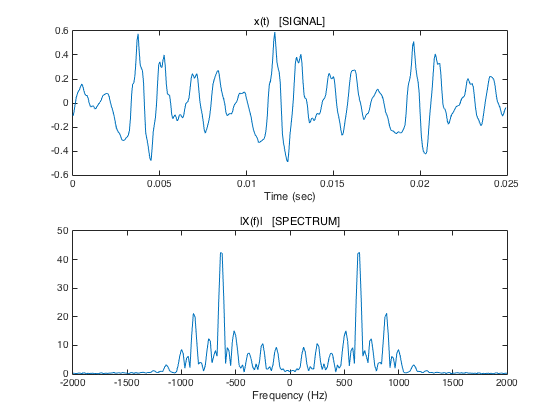
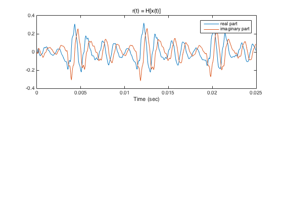
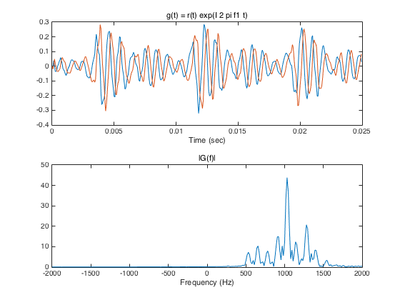
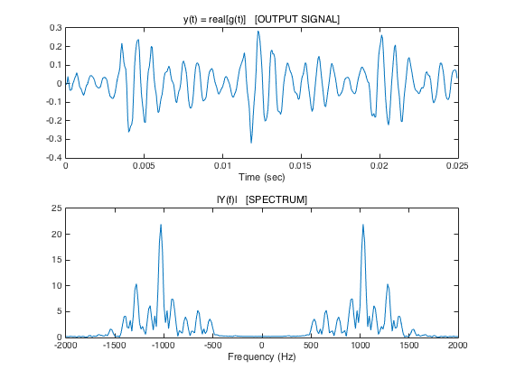

demo_5: Apply complex filtering to speech segment
Contents
[v, fs] = audioread('author.wav'); fs % sampling frequency (samples/second) N = 400; n = 0:N-1; t = n/fs; x = v(1660 + n)'; Nfft = 1024; X = fft(x, Nfft); f = (0:Nfft-1)/Nfft * fs; figure(1) subplot(2, 1, 1) plot(t, x) xlabel('Time (sec)') title('x(t) [SIGNAL]') subplot(2, 1, 2) plot(f - fs/2, fftshift(abs(X))) xlabel('Frequency (Hz)') title('|X(f)| [SPECTRUM]') xlim([-2000 2000]) print -dpdf demo_5A
fs =
16000
 Design complex filter
% First make low-pass filter K = 7; [b_lpf, a_lpf] = ellip(K, 0.2, 50, 0.48); % Complex modulate filter coefficients to get complex filter I = sqrt(-1); % s = exp( I * 0.5 * pi * (0:K) ); s = I.^(0:K); % equivalent to s = exp( I * 0.5 * pi * (0:K) ); b = b_lpf .* s; % Complex filter coefficients a = a_lpf .* s; H = fft(b, Nfft) ./ fft(a, Nfft); figure(1) clf M = max(abs(X)); subplot(2, 1, 1) plot(f - fs/2, fftshift(abs(X))/M, ... f - fs/2, fftshift(abs(H)), 'r' ) xlabel('Frequency (Hz)') legend('Signal spectrum', 'Filter frequency response') xlim([-2000 2000])

Apply filter to signal
r = filter(b, a, x); figure(2) clf subplot(2, 1, 1) plot(t, real(r), t, imag(r)) legend('real part', 'imaginary part') xlabel('Time (sec)') title('r(t) = H[x(t)]')
Complex amplitude modulation
Perform amplitude modulation of x(t) by multipying by complex-cosine function. This shifts the spectrum X(f) one way.
f1 = 400; g = r .* exp( I * 2 * pi * f1 * t ); G = fft(g, Nfft); figure(2) subplot(2, 1, 1) plot(t, real(g), t, imag(g)) xlabel('Time (sec)') title('g(t) = r(t) exp(I 2 pi f1 t)') subplot(2, 1, 2) plot(f-fs/2, fftshift(abs(G))) xlabel('Frequency (Hz)') title('|G(f)|') xlim([-2000 2000])
Take real part
The spectrum of the final output is not affected by negative frequencies shifting to the positive frequenices.
y = real(g); Y = fft(y, Nfft); figure(1) subplot(2, 1, 1) plot(t, y) xlabel('Time (sec)') title('y(t) = real[g(t)] [OUTPUT SIGNAL]') subplot(2, 1, 2) plot(f - fs/2, fftshift(abs(Y))) xlabel('Frequency (Hz)') title('|Y(f)| [SPECTRUM]') xlim([-2000 2000]) print -dpdf demo_5B